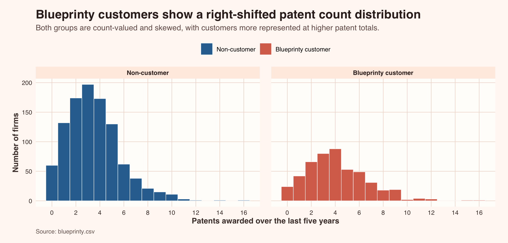
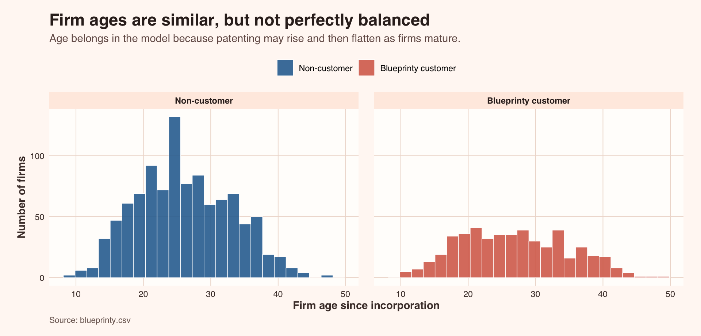
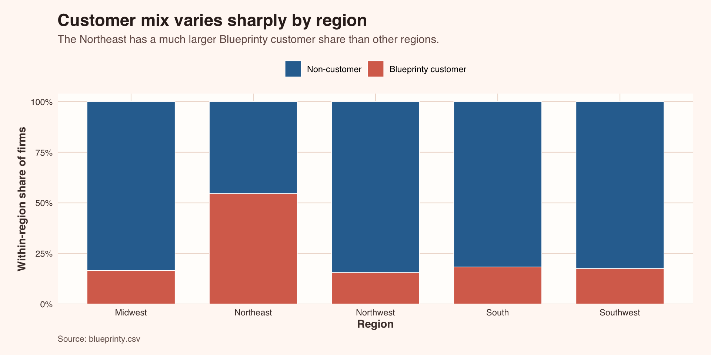
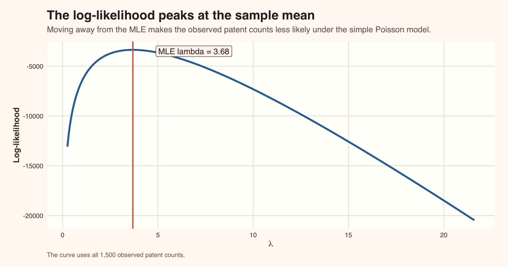
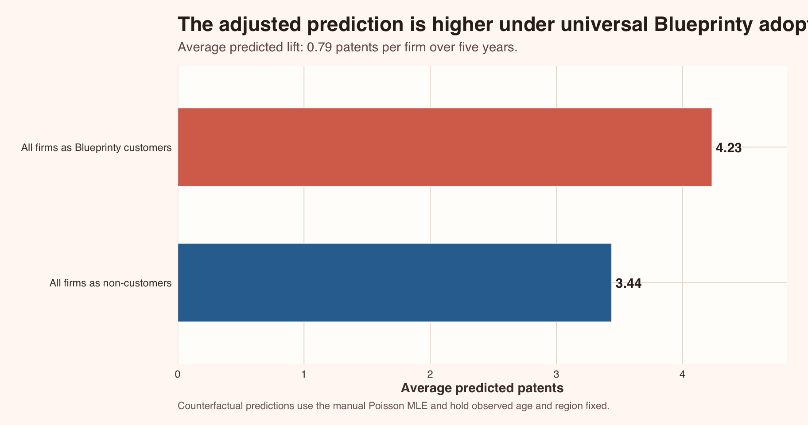

| Blueprinty Customer Profile | ||||||
| Patent awards and firm age by customer status | ||||||
| Firms | Share of sample | Mean patents | Median patents | Mean firm age | Median firm age | |
|---|---|---|---|---|---|---|
| Non-customer | 1,019 | 67.9% | 3.47 | 3.00 | 26.10 | 25.50 |
| Blueprinty customer | 481 | 32.1% | 4.13 | 4.00 | 26.90 | 26.50 |
Poisson Regression and Maximum Likelihood Estimation
A Blueprinty case study on patent approvals, customer selection, and count models
Important
Key takeaway: Blueprinty customers have higher patent counts in the raw data, but customer status is not randomly assigned. A useful model needs to compare customers and non-customers while adjusting for observable firm differences such as age and region.
Introduction
Blueprinty makes software for engineering firms preparing patent applications. Its marketing team wants to support a straightforward claim: firms that use Blueprinty are more successful at getting patents awarded.
That claim sounds simple, but the data make it more delicate. The ideal evidence would follow the same firms before and after adopting Blueprinty, or randomly assign firms to use the software. Instead, the available dataset is a cross-section of 1,500 mature engineering firms. For each firm, we observe the number of patents awarded over the last five years, region, firm age, and whether the firm is a Blueprinty customer.
The central challenge is selection. Blueprinty customers may differ from non-customers before software ever enters the story. They may be older, clustered in more patent-intensive regions, or otherwise more likely to win patent approvals. The analysis below uses Poisson regression and Maximum Likelihood Estimation (MLE) to separate the raw customer gap from differences explained by observable firm characteristics.
Exploring the Data
Before estimating a model, it helps to look at the shape of the outcome and the balance of the customer groups. The table below gives a compact view of the sample.
Blueprinty customers account for 32.1% of the sample. Their average patent count is 4.13, compared with 3.47 among non-customers. The raw difference points in Blueprinty’s favor, but it is not yet an adjusted estimate of the software’s association with patent approvals.

The patent outcome is concentrated at low integer values, with a long right tail. This is exactly the type of outcome where a count model is more natural than a Normal linear regression. Customers appear more likely to sit in the higher-count part of the distribution, but overlap remains substantial.
Firm age is another potential source of confounding. Older firms may have more experienced research teams, deeper legal processes, or a larger portfolio of patentable work.

The age distributions are broadly comparable, though not identical. Because patent productivity may change nonlinearly as firms mature, the regression below includes both age and age squared.
Region also matters. Patent activity may be connected to local industry clusters, legal infrastructure, or regional specialization.

This regional imbalance is important. If some regions naturally produce more patents, a raw comparison between customers and non-customers may partly reflect geography. The regression will include region indicators so Blueprinty’s customer coefficient is estimated net of these observed differences.
A Simple Poisson Model via Maximum Likelihood
Patent approvals are non-negative counts: a firm can receive 0, 1, 2, or more patents, but it cannot receive -1. A Normal regression can produce negative predictions and treats the outcome as continuous, so it is not the most natural starting point. A Poisson model is designed for count outcomes and models the expected count directly.
For a single count outcome,
\[ Y \sim \text{Poisson}(\lambda) \]
where \(\lambda > 0\) is both the expected count and the variance under the simplest Poisson model. The probability mass function is:
\[ f(Y_i|\lambda) = \frac{e^{-\lambda}\lambda^{Y_i}}{Y_i!} \]
If the observations are independent and identically distributed, the likelihood for the full sample is the product of each firm’s probability:
\[ L(\lambda|Y_1,\ldots,Y_n) = \prod_{i=1}^{n} \frac{e^{-\lambda}\lambda^{Y_i}}{Y_i!} \]
Taking logs turns the product into a sum:
\[ \ell(\lambda) = \sum_{i=1}^{n}\left[-\lambda + Y_i\log(\lambda) - \log(Y_i!)\right] \]
which simplifies to:
\[ \ell(\lambda) = -n\lambda + \log(\lambda)\sum_{i=1}^{n}Y_i - \sum_{i=1}^{n}\log(Y_i!) \]
MLE chooses the parameter value that makes the observed data most likely. For the one-parameter Poisson model, the first-order condition gives a familiar result:
\[ \frac{\partial \ell(\lambda)}{\partial \lambda} = -n + \frac{\sum_{i=1}^{n}Y_i}{\lambda} \]
Set this equal to zero and solve:
\[ \hat{\lambda}_{MLE} = \frac{1}{n}\sum_{i=1}^{n}Y_i = \bar{Y} \]
So in the simplest Poisson model, the MLE for \(\lambda\) is just the sample mean patent count.
The code below writes the log-likelihood manually and asks optim() to find the best value of \(\lambda\) numerically. The result should match the sample mean almost exactly.
poisson_loglikelihood <- function(lambda, y) {
if (lambda <= 0) {
return(-Inf)
}
sum(dpois(y, lambda = lambda, log = TRUE))
}
y_patents <- blueprinty$patents
simple_poisson_mle <- optim(
par = mean(y_patents),
fn = function(lambda) -poisson_loglikelihood(lambda, y_patents),
method = "Brent",
lower = 0.001,
upper = max(y_patents) * 2
)
tibble(
Method = c("Sample mean", "optim() MLE"),
`Estimated lambda` = c(mean(y_patents), simple_poisson_mle$par),
`Absolute difference` = c(NA_real_, abs(mean(y_patents) - simple_poisson_mle$par))
) |>
gt() |>
tab_header(
title = "Simple Poisson MLE Check",
subtitle = "The numerical optimizer recovers the analytical MLE"
) |>
fmt_number(columns = c(`Estimated lambda`, `Absolute difference`), decimals = 6) |>
sub_missing(columns = `Absolute difference`, missing_text = "Reference") |>
tab_options(table.font.names = "Manrope")| Simple Poisson MLE Check | ||
| The numerical optimizer recovers the analytical MLE | ||
| Method | Estimated lambda | Absolute difference |
|---|---|---|
| Sample mean | 3.684667 | Reference |
| optim() MLE | 3.684667 | 0.000000 |

The curve has a single clear peak. Visually, the MLE is the value of \(\lambda\) at the top of the curve; algebraically, it is the sample mean.
Poisson Regression
The one-parameter model treats all firms as if they share the same expected patent count. That is too blunt for Blueprinty’s question. A Poisson regression lets each firm’s expected patent count depend on its characteristics:
\[ Y_i \sim \text{Poisson}(\lambda_i) \qquad \text{where} \qquad \lambda_i = \exp(X_i'\beta) \]
The exponential link matters because \(X_i'\beta\) can be any real number, while \(\lambda_i\) must be positive. Applying \(\exp(\cdot)\) guarantees every predicted patent count is greater than zero.
The model includes Blueprinty customer status, firm age, firm age squared, and region indicators. Age is centered before squaring to improve numerical stability in the hand-coded optimizer; the model still adjusts for firm age and a nonlinear age pattern. The Midwest is the omitted region, so the regional coefficients compare each region with the Midwest.
The negative log-likelihood below is the regression version of the earlier likelihood. Instead of one shared \(\lambda\), each row gets its own \(\lambda_i = \exp(X_i\beta)\).
blueprinty_model <- blueprinty |>
mutate(
age_centered = age - mean(age),
age_centered_sq = age_centered^2
)
x_reg <- model.matrix(
~ iscustomer + age_centered + age_centered_sq + region,
data = blueprinty_model
)
poisson_regression_nll <- function(beta, y, x) {
eta <- as.vector(x %*% beta)
lambda <- exp(eta)
-sum(y * eta - lambda - lgamma(y + 1))
}
start_values <- c(log(mean(y_patents)), rep(0, ncol(x_reg) - 1))
manual_mle <- optim(
par = start_values,
fn = poisson_regression_nll,
y = y_patents,
x = x_reg,
method = "BFGS",
hessian = TRUE,
control = list(maxit = 10000, reltol = 1e-12)
)
manual_varcov <- solve(manual_mle$hessian)
manual_results <- tibble(
term = colnames(x_reg),
manual_estimate = manual_mle$par,
manual_std_error = sqrt(diag(manual_varcov))
)To check the hand-coded estimator, I fit the same specification using R’s built-in glm() with a Poisson log link. The table reports both sets of estimates side by side rather than printing raw regression output.
| Manual MLE and glm Estimates Align | |||||
| Both models use a Poisson log link with age, age squared, customer status, and region controls | |||||
| Term | Manual MLE estimate | Manual MLE SE | glm estimate | glm SE | Estimate difference |
|---|---|---|---|---|---|
| Intercept | 1.3461 | 0.0383 | 1.3447 | 0.0384 | 0.0015 |
| Blueprinty customer | 0.2079 | 0.0309 | 0.2076 | 0.0309 | 0.0003 |
| Firm age, centered | −0.0079 | 0.0021 | −0.0080 | 0.0021 | 0.0000 |
| Firm age squared, centered | −0.0030 | 0.0003 | −0.0030 | 0.0003 | 0.0000 |
| Region: Northeast | 0.0289 | 0.0436 | 0.0292 | 0.0436 | −0.0003 |
| Region: Northwest | −0.0180 | 0.0538 | −0.0176 | 0.0538 | −0.0004 |
| Region: South | 0.0572 | 0.0526 | 0.0566 | 0.0527 | 0.0006 |
| Region: Southwest | 0.0502 | 0.0472 | 0.0506 | 0.0472 | −0.0004 |
The manual optimizer and glm() estimates are effectively the same. Small differences are expected because the hand-coded estimate relies on a numerical optimizer and a numerical Hessian, while glm() uses an iterative fitting routine built for generalized linear models.
The Blueprinty customer coefficient is on the log scale. Exponentiating it converts the coefficient into a multiplicative effect on expected patent counts:
| Interpreting the Blueprinty Coefficient | ||||
| Exponentiating the log coefficient converts it to a percentage difference | ||||
| Blueprinty log coefficient | Multiplicative effect | Percent difference in expected patents | Approx. 95% CI, low | Approx. 95% CI, high |
|---|---|---|---|---|
| 0.208 | 1.231 | 23.1 | 15.9 | 30.8 |
Holding firm age and region constant, the model estimates that Blueprinty customers have about 23.1% higher expected patent counts than comparable non-customers. In business terms, the association is meaningfully positive: customer firms are predicted to generate more patent approvals even after adjusting for the observed differences available in the dataset.
The Effect of Blueprinty’s Software
The coefficient interpretation is useful, but leaders often want an answer in expected patent counts rather than log points or percentages. To translate the model into that scale, I construct two counterfactual scenarios:
- Every firm is treated as a non-customer.
- Every firm is treated as a Blueprinty customer.
Age and region stay fixed at each firm’s observed values. The only thing that changes is the customer indicator.
| Adjusted Counterfactual Patent Counts | ||
| Predictions hold each firm's age and region constant | ||
| Scenario | Average predicted patents | Difference vs. non-customer scenario |
|---|---|---|
| All firms as non-customers | 3.439 | 0.000 |
| All firms as Blueprinty customers | 4.233 | 0.794 |

The adjusted counterfactual estimate is an average increase of 0.79 patents per firm over five years. That is a practical translation of the model’s multiplicative customer effect: if firms had the same ages and regional mix but all were treated as Blueprinty customers, the model predicts a higher average patent count.
Conclusion
This analysis supports Blueprinty’s claim in a careful, qualified way. The raw data show that customers have higher patent counts, and the Poisson regression still estimates a positive Blueprinty association after adjusting for firm age, nonlinear age patterns, and region.
The strongest business interpretation is that Blueprinty customer status is associated with higher expected patent approvals among comparable mature engineering firms. The model estimates that customers have roughly 23.1% higher expected patent counts, or about 0.79 additional patents per firm over five years in the adjusted counterfactual calculation.
The limitation is important: this is observational data, not a randomized experiment. Unobserved differences may remain. For example, firms that choose Blueprinty could also have stronger patent teams, larger R&D budgets, or more aggressive intellectual-property strategies. The model adjusts for the variables we observe, but it cannot prove definitive causality. A fair conclusion is that the evidence is consistent with Blueprinty’s marketing claim, while still leaving room for unobserved confounding.